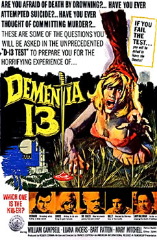

Dementia 13

Francis Ford Coppola
1963
81 minutes
Wikipedia link
IMDB link
TV Tropes link
This is text.
Time to choose something different:
- "Fishy fishy in the brook, Daddy caught you, now you're a hook-er!" - Turn to section 151
- I feel like I should chase this with a doomed love story, but I'm going to need to ease into it with some gruesome atomic bomb aftermath footage! - Turn to section 166
- Poor Billy never had a chance. I bet joining the army and some dietary changes would have cured what ailed him! - Turn to section 37